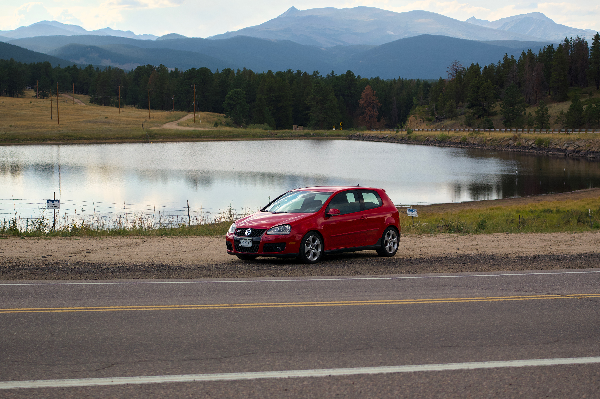
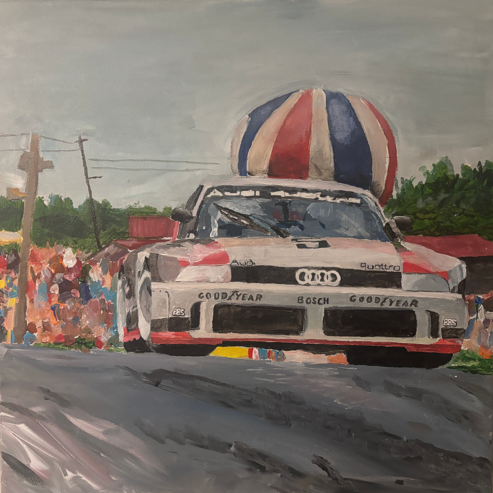
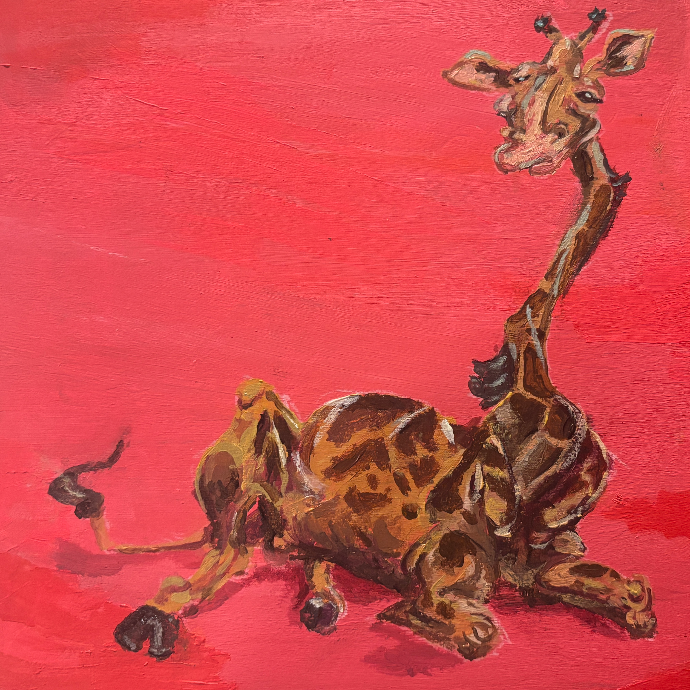

Coding isn't the only thing that I spend my time on. I have a variety of hobbies that I enjoy, and I like to keep myself busy with them. Here are some of my favorites:
Working on cars
I like messing around with cars with my friends. I started helping my dad on his car projects when I was little, and when the time came to work on my own car, a new love grew. For the first couple of years of ownership, I had some car project at least once a month.

Piano
I started playing piano when I was eight. It is a great way to refresh and relax after a long day. I enjoy playing classical pieces. My favorites to play are Frederic Chopin and Franz Liszt.
Painting
I started painting when I needed decorations for my room. I liked the way vinyls looked, but I didn't want to spend money on them, so I started painting my own. I made over 25 album covers, and my skills improved tremendously. I now enjoy painting animals, cars, and other random things.


Exercising
I joined a local cross country team coached by my old PE teacher. I quickly fell in love with running and the sense of community it brings. Running turned into a love for lifting weights and staying active